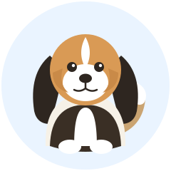

A calm, friendly place to meet some wonderful dogs.
Welcome!
Hi there! Welcome to the Virtual Dog Park. This is a small website made
with plain HTML, CSS, and JavaScript. Below you will find a short
encyclopedia of three popular dog breeds. Read about their size,
personality, and everyday care, and use the Pet button to say hello!
Dog Encyclopedia
Three friendly breeds, each with its own look and personality.

Beagle
Size
Small to medium. Most Beagles stand about 33–41 cm (13–16 in) tall and weigh 9–11 kg (20–25 lb).
Personality
Friendly, curious, and cheerful. Beagles love people and other dogs, but they have a strong nose and like to follow scents.
Everyday care
Give them daily walks and playtime. Brush their short coat once a week, keep their long ears clean, and watch their diet—Beagles love to eat!

Golden Retriever
Size
Large. Golden Retrievers are about 51–61 cm (20–24 in) tall and weigh 25–34 kg (55–75 lb).
Personality
Gentle, smart, and eager to please. They are patient with children and are one of the most loving family dogs.
Everyday care
They need exercise every day, like fetching a ball. Brush their golden coat two or three times a week, and give them lots of attention and training.

Poodle
Size
Poodles come in three sizes. The Standard stands over 38 cm (15 in) and weighs 20–32 kg (45–70 lb). Miniature and Toy are much smaller.
Personality
Very smart and lively. Poodles learn tricks quickly and enjoy being part of family activities.
Everyday care
Their curly coat needs regular grooming every few weeks and daily light brushing to avoid tangles. They need daily play and brain games to stay happy.